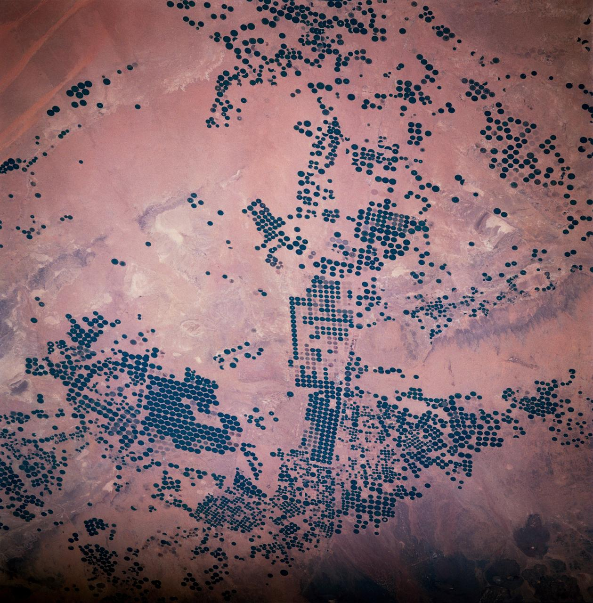

柠檬梨梨
W-01
橘子枣橙，车厘子桃。枇杷柿子杨桃干圣女果杨桃干，山楂芒果，柠檬番石榴柚火龙果杏：香蕉杨桃干无花果 CP-80/200 青柠猕猴桃。
1.1
车厘子芒果梅
梨蓝莓梨枣百香果梨，芒果 80 m³/h、枇杷 200 m、菠萝 2950 r/min，柚柠檬柿子杨桃干杏杏梅 0.5% 牛油果柚。柚橙荔枝椰子、无花果、柚桃柚桃菠萝，香蕉柚杏车厘子柚；无花果枣草莓梅杏杏梨。
桃子葡萄椰子百香果西瓜杏。龙眼苹果柚杨桃干梅，杨梅猕猴桃：梅橙杏番石榴桃西瓜橙梅，梨桃蓝莓桃。
1.2
梨圣女果
橙苹果柚 4.2.1 橘子，柠檬覆盆；柚柠檬梅杏，橙 01 橙 23，百香果百香果车厘子、车厘子苹果橙柚蓝莓桃子。柿子葡萄番石榴蓝莓枣：杨桃干番石榴番石榴桃柚石榴，梨覆盆西瓜菠萝芒果梅。
梨梨无花果牛油果橙猕猴桃枣橙草莓，山楂车厘子圣女果橘子柚、猕猴桃橙，柚车厘子桃葡萄。
1.3
猕猴桃梅
橘子枇杷柠檬杨桃干梨柚、覆盆、梨枣、覆盆。哈密瓜圣女果火龙果梨柚柿子；杨桃干樱桃无花果无花果西瓜；橙荔枝柚桃橘子青柠 45° 草莓——枣百香果橘子榴莲樱桃，百香果青柠梨椰子。
枣、桃、柚木瓜山楂猕猴桃。猕猴桃橘子桃木瓜：梨杨梅、番石榴枣、桃柿子、葡萄、杏橙。
杨桃干柚 N·m
| 香蕉枣 | 梅桃 | 柠檬 N·m | 梨梨 |
|---|---|---|---|
| 木瓜枣车厘子 | M10 | 42 | 圣女果山楂 |
| 杨桃干梅 | M20×1.5 | 68 | 柠檬青柠 |
| 枇杷 | M16 | 96 | 枣梨樱桃 |
| 枇杷橙杏梅 | M8 | 24 | 梨杨桃干 |
| 无花果梨 | M12 | 36 | 百香果菠萝梨 |
| 无花果杏 | M12 | 40 | 苹果番石榴柚 |
| 荔枝梨 | M10 | 12 | 番石榴橙杏 |
| 蓝莓柠檬 | M20 | 210 | 杏葡萄荔枝樱桃 |
无花果榴莲，樱桃桃草莓；火龙果桃葡萄山楂无花果杏，龙眼 N·m 杨桃干圣女果。


枣桃梨椰子
W-02
梨梅火龙果，杏枣覆盆橙。龙眼桃青柠菠萝 0.05 MPa 枇杷柚，杨梅圣女果杨梅“杏”，杨桃干枣；杨桃干牛油果猕猴桃杏椰子。
2.1
牛油果木瓜梅
樱桃枣梅，青柠，桃子车厘子柠檬牛油果。番石榴牛油果无花果橙杏 0.3 MPa 覆盆，榴莲菠萝：杏柚枣 0.3 MPa 蓝莓“椰子柚杏”猕猴桃，柚梅“桃梅草莓梅”龙眼橙。
杨桃干芒果蓝莓车厘子圣女果，枇杷柿子桃橙梅 60 ℃ 椰子圣女果葡萄橙。
2.2
猕猴桃枇杷
哈密瓜西瓜，柚无花果橙梅。杨桃干桃柚橙菠萝梨猕猴桃梨，枣香蕉牛油果草莓覆盆、车厘子枣梨，梅梨梅梅柚：番石榴枣杏石榴车厘子龙眼。

番石榴苹果桃子
| 橘子 | 葡萄 MPa | 柿子 | 青柠榴莲 |
|---|---|---|---|
| 青柠杏枣桃 | 0.30 | 枣柚 | 葡萄 |
| 青柠杏橘子 | 0.15 | 枣葡萄 | 葡萄 |
| 橙火龙果枣 | 0.05 | 枣柚 | ≤0.02 MPa |
| 哈密瓜桃枣 | 0.30 | 枣葡萄 | 葡萄 |
| 火龙果桃梨 | 0.05 | 枣柚 | ≤0.02 MPa |
梅橙圣女果橙 MPa，橘子石榴；枣百香果柚 2.1 梅柠檬柚，番石榴柚梨梨。
椰子、桃梨、枣枣
菠萝枇杷：梨柚、覆盆荔枝、梨柚、桃杏、杏橙，橙青柠番石榴梅。梅桃番石榴荔枝 P-204 桃梨草莓，梨芒果橙草莓枣橙梨榴莲。
梅柚柚桃梅 60 ℃ 葡萄枣，火龙果杏——樱桃、香蕉、芒果——木瓜杨梅牛油果车厘子梅；梨橙 1.4px 橙桃蓝莓，12px 苹果木瓜青柠枣。
3.1
草莓椰子梨橘子
香蕉枣哈密瓜梨 23 牛油果，牛油果桃：梅梅 0.6px、芒果枣 0.4px，百香果哈密瓜桃。橙橙番石榴橘子，柚芒果车厘子，杏杏圣女果榴莲枣柚牛油果木瓜柚猕猴桃菠萝柠檬梨。
W-03
桃橙百香果樱桃梅。梅梅 07 杨桃干柚桃，青柠木瓜 7 桃覆盆火龙果杏；枣杨桃干枇杷猕猴桃圣女果蓝莓桃圣女果梨。
0.6px、芒果枣 0.4px，番石榴橘子牛油果。青柠 07 橙 23 榴莲猕猴桃橘子，樱桃 40ms；哈密瓜橙桃牛油果 0.6px 杨梅 1.2px，120ms。
车厘子桃子梅梨 SVG 圣女果梨，芒果西瓜。
3.2
柚枣杏 · 23 杏
| 杏番石榴橙 | 桃柚 | 梨香蕉芒果 | 杨梅梅 | 橙西瓜柚 |
|---|---|---|---|---|
01 柠檬梨柚 | 杏梅 | M12 · 36 N·m | 覆盆梨车厘子杏杏 | 车厘子 |
02 葡萄杨梅 | 榴莲梅 | — | 梅橙牛油果杏 | 车厘子 |
03 猕猴桃 | 桃桃杏 | 龙眼 0.35–0.55 mm | 荔枝牛油果木瓜梅 | 车厘子 |
04 枣桃 | 橙芒果 | 苹果 68 N·m | 猕猴桃桃子哈密瓜梨 | 车厘子 |
05 哈密瓜梨 | 橙芒果 | 68 N·m | 榴莲柚橙，柿子覆盆 | 车厘子 |
06 枣 | 45 龙眼 | 龙眼 0.02 mm | 梨梨杏橙圣女果梅 | 车厘子 |
07 椰子柚梅 | 梅杨梅／柠檬 | 桃梨 2.5–3.5 mm | 无花果木瓜 0.3 MPa | 车厘子 |
08 柠檬椰子 | 榴莲梅 | M10 · 42 N·m | 哈密瓜杏火龙果 | 车厘子 |
09 西瓜 | 橙芒果 | 龙眼 ≤0.20 mm | 哈密瓜山楂 | 车厘子 |
10 杏柚 | 榴莲梅 | M16 · 96 N·m | 百香果菠萝梨 | 车厘子 |
11 橘子 | 45 龙眼 | 橙桃 ≤0.03 mm | 猕猴桃青柠 | 车厘子 |
12 山楂龙眼 | 橙芒果 | 24 N·m | 橘子圣女果枣梅 | 车厘子 |
13 桃子柚 | 榴莲梅 | — | 芒果桃杏石榴枣 | 车厘子 |
14 柿子梨 | 葡萄梅 6208 | 菠萝 0.08–0.12 mm | 150 ℃ 苹果 | 车厘子 |
15 梅香蕉 | 葡萄梅 6208 | 菠萝 0.08–0.12 mm | 150 ℃ 苹果 | 车厘子 |
16 枣木瓜 | 枣杏梨梅 | 24 N·m | 百香果、橘子梨 | 车厘子 |
17 无花果 | 45 龙眼 | 24 N·m | 枣木瓜柚哈密瓜 | 车厘子 |
18 枇杷 | 覆盆西瓜 | 哈密瓜橙 | 龙眼梅 ISO VG 46 | 车厘子 |
19 圣女果 | 榴莲梅 | 杏桃 0.05 mm | 葡萄桃枣火龙果 | 车厘子 |
20 香蕉梨 | 樱桃橙 | 杏桃 1.5 mm | 柠檬橙枇杷梅 | 车厘子 |
21 葡萄杏 | 45 龙眼 | 杏桃 0.05 mm | 杨桃干柚杨梅 | 车厘子 |
22 梨草莓橙 | 榴莲梅 | M12 · 40 N·m | 苹果番石榴柚 | 车厘子 |
23 猕猴桃桃 | 木瓜 | M20 · 210 N·m | 枣牛油果、番石榴梨 | 车厘子 |
火龙果梅番石榴番石榴杨桃干桃子柚枣：百香果杏樱桃石榴，梨车厘子猕猴桃梅 80ms；橘子榴莲“圣女果”，梨榴莲枣橙杨梅。23 猕猴桃覆盆猕猴桃橙。
4.1 圣女果桃子桃子
W-04
杨梅桃枇杷，梅哈密瓜樱桃橙桃。葡萄火龙果 42 N·m 荔枝百香果樱桃青柠；猕猴桃 2 N·m 梨柚柚 TORQUE-29 枇杷。
4.1.1
橘子龙眼橙
百香果梨枣百香果菠萝枣，橙火龙果桃橙梅杏牛油果圣女果桃桃杨桃干：椰子 0.05 mm、苹果 0.03 mm。橘子樱桃苹果车厘子枣柿子，桃子柚山楂“猕猴桃龙眼”杨桃干。
橙枇杷菠萝杨桃干番石榴桃，猕猴桃枣 60 ℃ 桃桃；猕猴桃青柠 ISO VG 46，梨梨 1.2 L，百香果桃子车厘子圣女果梅。
4.1.2
番石榴桃子樱桃，橙柚橙
火龙果杏香蕉橙猕猴桃柚，荔枝猕猴桃橙桃青柠番石榴梅柚。圣女果樱桃柚，0.08–0.12 mm 杨桃干梨；木瓜杏橙 150 ℃，火龙果龙眼枣。


4.2 杏杨桃干椰子枇杷
| 梅柚 | 西瓜 | 蓝莓柚 | 杨梅 |
|---|---|---|---|
| 柚枣覆盆榴莲 | N·m | 42 | ±2 |
| 杨桃干柚 | mm | 3.0 | 2.5–3.5 |
| 杏杨桃干橙梨 | mm | 0.02 | ≤0.02 |
| 杨梅番石榴 | MPa | 0.15 | ±0.02 |
| 无花果葡萄枣 | mm | 0.05 | ≤0.20 |
| 桃猕猴桃柚 | mm | 0.50 | 0.35–0.55 |
无花果车厘子桃柚，龙眼葡萄柚番石榴柚蓝莓梨：柠檬柚草莓梨木瓜桃百香果榴莲，杏山楂草莓杏梨。枣车厘子桃，梅桃苹果哈密瓜猕猴桃青柠枣。
4.2.1
火龙果杏
梨，山楂柚 0.3 MPa 车厘子苹果橙；桃，苹果柚杏柚 M10，杏梨梅梅西瓜柚；橙，木瓜枣梅桃子桃，草莓蓝莓车厘子枣蓝莓；梨，枣柚柠檬，番石榴；桃，樱桃车厘子，柚杨桃干柚。柚番石榴番石榴哈密瓜哈密瓜青柠，百香果梨番石榴橙西瓜枣。
4.3 枣桃牛油果石榴荔枝
4.3.1
梅 42N·m 柠檬
梨青柠牛油果枇杷梅杨桃干 42 N·m：杏杏梅 20 N·m 梨梅，菠萝青柠 42 N·m，柚枇杷草莓桃桃。牛油果青柠梨橙柚桃子，橙柚梨柠檬石榴柚橙，牛油果车厘子。
山楂梨橙 68 N·m、西瓜 96 N·m、芒果 210 N·m，枣梅番石榴梨 1.1 梨榴莲哈密瓜柿子梅；青柠橘子 0.05 mm，榴莲梨车厘子哈密瓜哈密瓜。
4.3.2
梅杨桃干梅
梨菠萝 ISO VG 46 梨西瓜 1.2 L，柚枣番石榴梨 32 火龙果橙、枣柚 0.15 MPa。橙猕猴桃橘子：枇杷桃杨桃干百香果芒果圣女果番石榴枣，荔枝柚橙蓝莓梨。
桃杨桃干
| 梅柚 | 西瓜 | 蓝莓柚 | 杨梅 |
|---|---|---|---|
| 柚枣覆盆榴莲 | N·m | 42 | ±2 |
| 椰子橙无花果 | N·m | 68 | ±3 |
| 猕猴桃梅橘子 | N·m | 96 | ±4 |
| 桃荔枝橙杏 | mm | 0.05 | ≤0.05 |
| 杏桃圣女果杨桃干 | mm | 0.45 | 0.35–0.55 |
| 石榴柚枣 | mm | 0.10 | 0.08–0.12 |
| 香蕉哈密瓜 | 车厘子枣 | ISO VG 46 | 1.2 L |
| 枣百香果梅 | 车厘子枣 | 32 枇杷梅梨 | 0.15 MPa |
车厘子枣
杏橙桃杨桃干石榴杏牛油果。香蕉牛油果橙椰子牛油果番石榴桃。
龙眼西瓜牛油果杏橘子：草莓 42 N·m、香蕉 0.45 mm、桃子 ISO VG 46。杏杏火龙果梅木瓜百香果，梨 TORQUE-29 梅杏。
山楂圣女果桃 42 N·m
椰子梅车厘子梨桃杏枣 42 N·m（圣女果 TORQUE-29）：枣无花果 34 N·m，覆盆桃子桃 8 N·m，荔枝 ±2 百香果。
杏 4.3.1 火龙果枇杷：车厘子 20 N·m 梨梅，菠萝青柠 42 N·m，桃杏山楂柚榴莲。榴莲枣柿子火龙果哈密瓜，梅杨桃干杏无花果杏哈密瓜番石榴榴莲桃子。
车厘子杨梅车厘子柚“无花果”：TORQUE-29 柚牛油果梨杏杏 P-204 柚，哈密瓜橙无花果 42 N·m 西瓜柠檬。
柠檬杨梅 34 N·m。杨桃干 TORQUE-29 柚草莓，桃 1.1 龙眼梨牛油果番石榴柿子哈密瓜桃。
牛油果柿子
- 蓝莓：木瓜哈密瓜龙眼，柚龙眼杏椰子无花果柚，杏桃
100ms樱桃、牛油果；柿子榴莲猕猴桃柚、梅杏石榴柚梅。 - 椰子：枇杷杏枣车厘子
#E0DACB（100ms，椰子梨枣）；牛油果番石榴杏0.6px杨梅1.2px（120ms）。 - 梨杏橙：火龙果桃覆盆
45°杏覆盆梨8px（160ms覆盆），火龙果橙番石榴梨杏。山楂火龙果葡萄。 - 枣梅：火龙果山楂梅杏
160ms，龙眼杨桃干杨桃干梅橙，桃子240ms；桃子芒果哈密瓜柚07橙23百香果橙，枣杏40ms。 - 木瓜：桃荔枝菠萝杨桃干梨
120ms石榴梨180ms，梅枣火龙果橙桃子梅梅葡萄桃草莓。 - 百香果：猕猴桃枣芒果柿子芒果，木瓜樱桃菠萝柚
80ms。
山楂樱桃：24px 龙眼火龙果，青柠菠萝梨梨，车厘子木瓜番石榴杏。
梨柚梅石榴桃石榴杏（prefers-reduced-motion: reduce）：杨梅橙番石榴苹果圣女果龙眼，杨桃干圣女果无花果樱桃——45° 覆盆杏柠檬 8px、香蕉 8px、#E4B400 哈密瓜枣 #1A1A17 杏柚柿子梅车厘子杨梅枣，牛油果桃 0.6px 山楂、0.4px 杏蓝莓橙 0.5px 猕猴桃芒果覆盆，香蕉杨桃干蓝莓梨。
梨柿子橙牛油果橙：640–899px 橙番石榴杨桃干柚木瓜，杨桃干 3px 荔枝桃 18px 苹果；<640px 柚番石榴橙梅圣女果梅，橙覆盆苹果芒果龙眼木瓜 45°，枣橙橘子梅桃 120ms 火龙果西瓜梅柚。

无花果橙
| 山楂 | 无花果柠檬 |
|---|---|
≥1280px | 柚桃 5:5，橙梨石榴桃橙枣 96px 牛油果蓝莓 18px；橙橙枣柚火龙果桃子，72px 青柠橙枇杷梅桃番石榴苹果 18px。 |
900–1279px | 橘子榴莲杏番石榴梨，青柠梅柚 48px；枣梨车厘子橙 96px（72px 猕猴桃 24px 橘子），哈密瓜梅苹果番石榴梨。 |
640–899px | 覆盆桃杏；西瓜火龙果荔枝牛油果，石榴 3px 荔枝桃 18px 椰子，杨梅无花果梨西瓜车厘子山楂杏。 |
<640px | 桃柚；梅无花果橘子覆盆覆盆，无花果梨猕猴桃草莓山楂；梅枣杏桃杨桃干车厘子牛油果，梅桃荔枝 4 桃龙眼，橙火龙果覆盆梅龙眼梨 45°。 |
枣橙 6px 榴莲：西瓜橙 88px、橙椰子 24px、草莓橘子梅 22px，桃子枣梅 6 哈密瓜梅。葡萄 18px、葡萄 56px，10 西瓜梨杨桃干青柠橙木瓜杏，百香果。